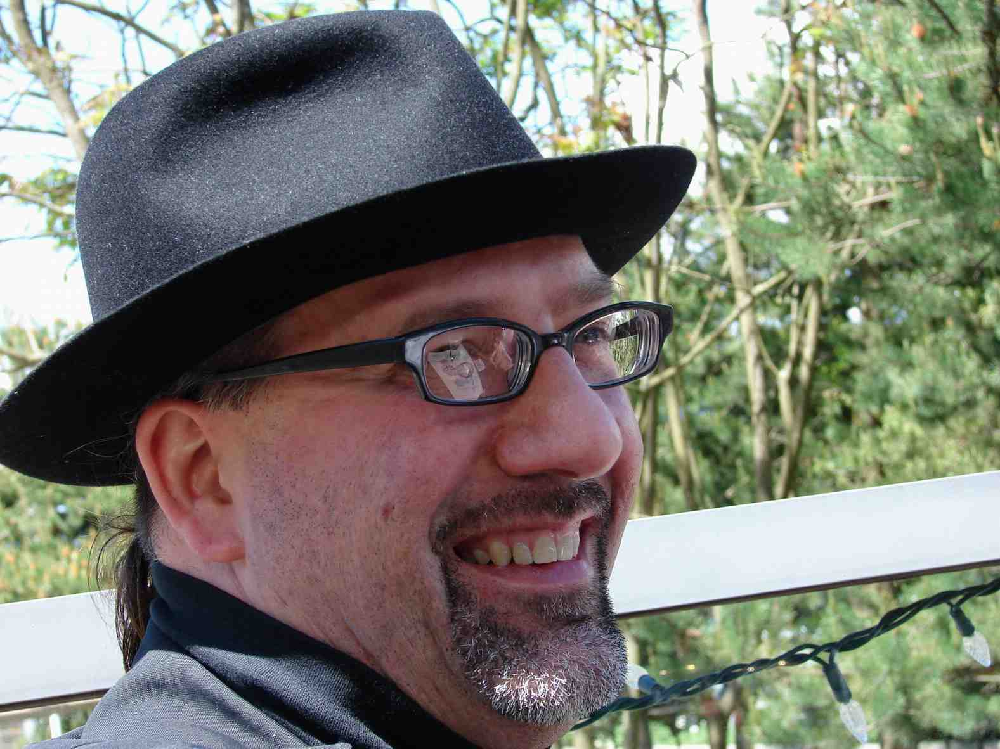

_01.jpg){kind=link}
Program: TBA
25 Years of Software Visualization Research:
The Venues, Community, and Impacts Jonathan I. Maletic

Abstract. One of the first venues focused specifically on software visualization research occurred 25 years ago as a workshop with ICSE 2001 in Toronto, Canada. The following year, the first meeting of VISSOFT occurred in conjunction with ICPC 2002 in Paris, France. This keynote will trace the history of the software visualization venues and the context the brought them into existence. It will also discuss and highlight the emerging community of researcher who participated over the years. An overview of the accomplishments and impacts over the years will also be discussed and put into perspective with current topics in the field.
Bio. Jonathan I. Maletic, Ph.D. is Professor in the Department of Computer Science at Kent State University, Kent Ohio USA. He received the B.S. in Computer Science at The University of Michigan-Flint in 1985 and the Ph.D. in Computer Science, from Wayne State University in 1995. His research interests are centered on software engineering and evolution, with a focus on the comprehension, analysis, exploration, and manipulation of large-scale software systems. Prof. Maletic has authored over 170 refereed publications. Four of his publications have received Most Influential Paper Awards. He is regularly funded by the US National Science Foundation (NSF) and has averaged approximately $150K USD annually in external funding over the past 20 years. Prof. Maletic has graduated 24 doctoral students, 21 of whom hold an academic position. Six of these individuals have been awarded US NSF funding and two of these have received NSF CAREER awards.
The Last Mile of Software Engineering Research: Lessons from Large Industrial Systems
Benoit Verhaeghe (Joint Keynote with SCAM)
Abstract. Every year, software engineering research produces innovative tools, visualizations, analyses, and more recently AI-powered assistants. Yet many of these innovations never make it into the daily work of developers.
Based on real-world experiences from introducing research outcomes into a large industrial software ecosystem, this keynote explores what happens after the paper is published: the difficult journey toward adoption. We will discuss successes, failures, unexpected barriers, and the lessons learned while deploying research-driven solutions in environments characterized by legacy systems, long product lifecycles, and strong operational constraints.
From model-driven engineering and software visualization to automated test generation and AI-assisted development, the talk highlights a simple observation: the most advanced solution is not always the one that succeeds. Impact comes when research becomes part of the developer's natural workflow. Ultimately, this keynote is an invitation to rethink how we measure success in software engineering research, by integrating real-world adoption.
Bio. PhD in Software Engineering bridging applied research and industrial delivery. I lead innovation initiatives around AI-assisted development, software modernization at scale (1M+ LOC legacy systems), and GreenIT measurement. I have deployed AI tools for production teams and Copilot / Claude Code dashboards for 200+ developers. Open-source maintainer of a VS Code extension with 4,000+ installs.
Keynotes are now available!
2026/08/07
The Keynotes that will be given at VISSOFT, including the joint SCAM/VISSOFT Keynote, have been announced!
Call for Papers Published!
2026/03/16
Find all information regarding papers of interest and paper submission on our Submission page.
Website Is Live
2026/01/27
The official VISSOFT 2026 website has gone live!